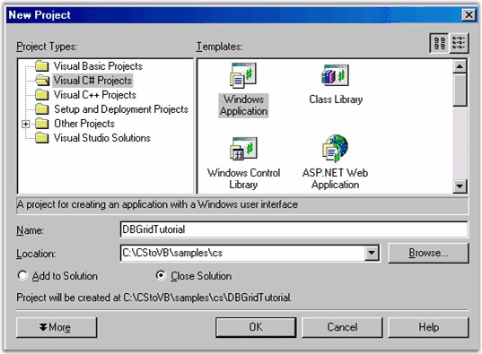
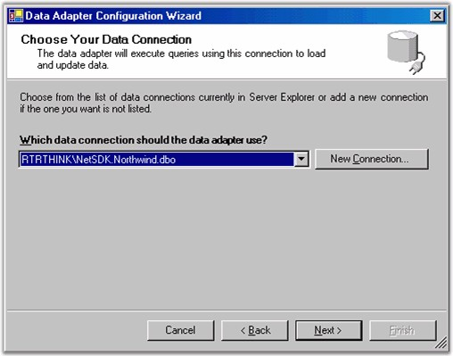
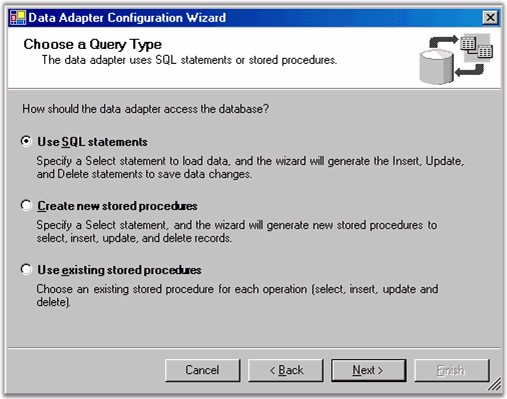
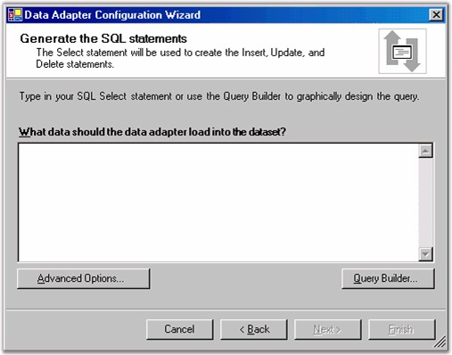
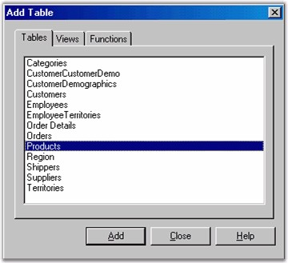
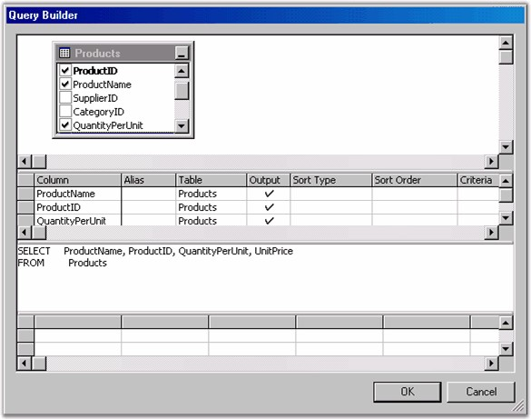
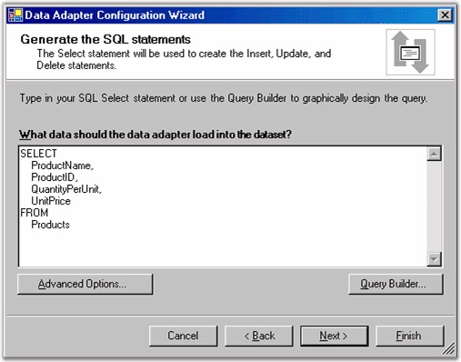
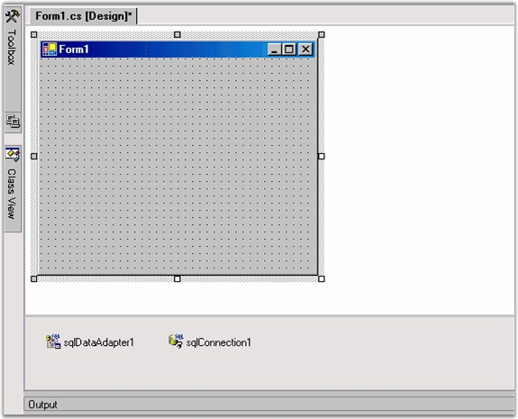
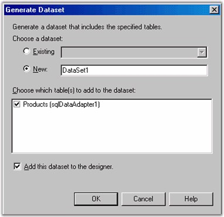
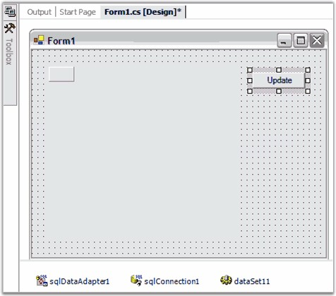

In this part, you will learn how to use the designer to place a Grid Data Bound Grid on a form.
1. In Visual Studio .NET, use the File -> Menu option to create a new Windows Application project, naming it DBGridTutorial.

Figure 46: Creating a New Windows Application
2. You now have an empty form on the design surface. Open the Data section of your toolbox and drag a SQLDataAdapter onto your form. This will open a Data Adapter Wizard.
3. Use the wizard to create a connection to the NorthWind database. This DataBase is installed as part of the .NET Framework ADO.NET samples.

Figure 47: Select the NorthWind Database
4. Select to use SQL statements.

Figure 48: Select to Use SQL Statements
5. To generate the SQL statement, click the Query Builder button.

Figure 49: Select the Query Builder
6. In the Add Table dialog, select the Products table and click Add, then Close.

Figure 50: Select the Products Table
7. In this Query Build window, select the ProductName, ProductID, QuantityPerUnit and UnitPrice. Then press OK.

Figure 51: Select the Fields for your Query
8. Click Next to confirm the Query you selected.

Figure 52: Confirm the Query
9. Click Finish. Your design surface will look similar to this.

Figure 53: Adapter and Connection
10. Next you will need to generate a dataset from the SQLDataAdapter. Right-click the sqlDataAdapter1 under the design surface and select Generate DataSet. You will then see this window.

Figure 54: Generating a Dataset
11. Press OK to add a DataSet11 object next to the sqlConnection1 under the design surface.
12. From the toolbox, drag the Grid Data Bound Grid control to your form. Size and position it and add a button labeled Update to your form.

Figure 55: Designer with Grid Data Bound Grid and Button
13. Click the Grid Data Bound Grid to display its properties in the PropertyGrid. Set these properties.
|
DataSource |
DataSet11 |
|
DisplayMember |
Products |
14. Double click the form on the design surface (not one of the controls, but the form itself) to add a load event handler. In this handler, add this single statement which, is given below.
|
[C#]
// Load dataset with records. this.sqlDataAdapter1.Fill(this.dataSet11); |
|
[VB.NET]
' Load dataset with records. Me.sqlDataAdapter1.Fill(Me.dataSet11) |
15. To support updation of the data in your database, you will need to call the Update command on the SQLDataAdapter. Double click the Update button on the design surface to add a Click Handler. Then add this single line of code to the handler.
|
[C#]
// Save Changes (if any) back to the database. this.sqlDataAdapter1.Update(this.dataSet11); |
|
[VB.NET]
' Save Changes (if any) back to the database. Me.sqlDataAdapter1.Update(Me.dataSet11); |
Now when you click the Update button it will post any changes that you have made back to your database.